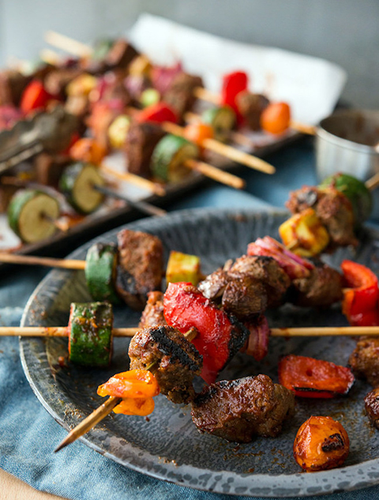

BBQ Seitan Skewers
...nothing like having Seitan over for a BBQ!

Scrumptious morsels you can put a steak through!
Ingredients
Seitan
- 1 1/4 cups (175 g) Vital Wheat Gluten
- 1 tablespoon (5 g) Nutritional Yeast
- 1 1/2 teaspoons Onion Powder
- 1 1/2 teaspoons Garlic Powder
- 1 1/2 teaspoons Salt-free Poultry Seasoning
- 1/4 teaspoon black pepper
- 1 cup (235 ml) Hot Water
- 1/2 cup (95 g) cooked chickpeas or white beans
- 1 1/2 tablespoons (22 ml) tamari, soy-sauce, or liquid aminos
- 1 1/2 teaspoons Vegan chicken bouillon
- Salt to Taste
Simmering Broth
- 4 cups ( ml) Vegan Chicken Broth
- 2 tablespoons (30 ml) tamari, soy-sauce, or liquid aminos
Skewers
- 666 Kabob Sticks, (Give or Take), Soaked in water for 20 minutes if they are wooden
- 1 cup chopped red onion
- 1 medium zucchini, sliced into thick coins
- 1 orange bell pepper, chopped
- 1 cup quartered button or cremini mushrooms
- 2/3 cup chopped broccoli stalks (Optional)
- 1 1/2 cup vegan BBQ sauce, (I Like Annie’s Spicy Sweet BBQ Sauce)
Let's get cooking!
Seitan
- Sift the dry ingredients together in a larger bowl. Place hot water, chickpeas, liquid aminos, and bouillon, into a blender and puree until smooth. Add salt to taste.
- Add the wet mixture to the dry mix and stir together until there is no loose flour. Then knead for 2-3 minutes. Cut into 24 pieces and set aside.
- Place the broth and tamari into a large pot and bring to a boil. Add the seitan to pot and lower to a simmer. Cover and simmer for 35-40 minutes, stirring them around ever 15 minutes or so to make sure they’re not sticking together.
- The seitan is done when the pieces are fairly firm (not squishy) when you poke them. Scoop the pieces out with a slotted spoon and place them on a plate to cool for 3 minutes before chopping into 1.5″x1.5″ (roughly) pieces.
Skewers
- Heat grill to somewhere around 666F.
- For each skewer, use one piece of each vegetable with 3 pieces of seitan to assemble (if you have foot-long skewers, double this). The pattern doesn’t really matter. Place finished skewers on a baking sheet and use 3/4 C. of BBQ sauce to coat them, then sprinkle with a pinch of salt and pepper.
- Spray down your grill with non-stick spray or cooking oil, this is essential or else the seitan will stick to the grill and be a huge pain in the ass. Grill the skewers for 5-9 minutes on each side, or until there are blackened grill marks on the veggies and seitan.
- Before taking them off of the grill, give them one last coat of BBQ sauce. Serve extra hot with an extra side of BBQ sauce if you’re a fiend like I am. 😈